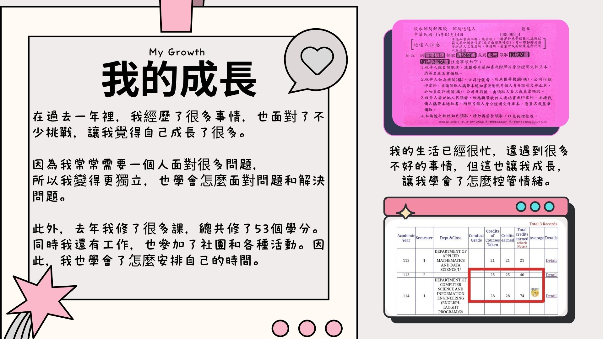

在過去一年裡，我經歷了很多事情，也面對了不少挑戰，讓我覺得自己成長了很多。
因為我常常需要一個人面對各種問題，所以我變得更獨立，也學會了怎麼面對問題和解決問題。
此外，去年我修了很多課，總共修了53個學分。同時，我還有工作，也參加了社團和各種活動。因此，我也學會了怎麼安排自己的時間。
我的生活已經很忙，還遇到很多不好的事情，但這也讓我成長，讓我學會了怎麼控管情緒
Over the past year, I have experienced many things and faced quite a few challenges, which made me feel that I have grown a lot.
Because I often had to face various problems on my own, I became more independent and learned how to deal with and solve problems.
In addition, last year I took many courses, earning a total of 53 credits. At the same time, I also had a job and participated in clubs and various activities. Therefore, I also learned how to manage my time effectively.
Even though my life has been very busy and I faced many negative experiences, these challenges helped me grow and taught me how to better control my emotions.
| Chinese (中文) | English (英文) |
|---|---|
| 在過去一年裡 | Over the past year |
| 我經歷了很多事情 | I have experienced many things |
| 也面對了不少挑戰 | Also faced quite a few challenges |
| 讓我覺得自己成長了很多 | Which made me feel that I have grown a lot |
| 因為我常常需要一個人面對各種問題 | Because I often had to face various problems on my own |
| 所以我變得更獨立 | I became more independent |
| 也學會了怎麼面對問題和解決問題 | Also learned how to deal with and solve problems |
| 此外，去年我修了很多課，總共修了53個學分 | In addition, last year I took many courses, earning a total of 53 credits |
| 同時，我還有工作，也參加了社團和各種活動 | At the same time, I also had a job and participated in clubs and various activities |
| 因此，我也學會了怎麼安排自己的時間 | Therefore, I also learned how to manage my time effectively |
| 我的生活已經很忙 | Even though my life has been very busy |
| 還遇到很多不好的事情 | I still faced many negative experiences |
| 但這也讓我成長 | But these challenges helped me grow |
| 讓我學會了怎麼控管情緒 | And make me learn how to better control my emotions |
Vocabulary List(生詞表)
| Chinese Character (漢字) | Pinyin (拼音) | English (英文) |
|---|---|---|
| 過去 | guòqù | Past / In the past |
| 經歷 | jīnglì | Experience / To go through |
| 事情 | shìqíng | Things / Matters / Events |
| 面對 | miànduì | To face / To confront |
| 不少 | bùshǎo | Not a few / Quite a lot |
| 挑戰 | tiǎozhàn | Challenge |
| 覺得 | juéde | Feel / hink |
| 自己 | zìjǐ | Myself |
| 成長 | chéngzhǎng | Grow / Growth |
| 很多 | hěn duō | A lot / Many |
| 因為 | yīnwèi | Because |
| 常常 | chángcháng | Often |
| 需要 | xūyào | Need |
| 一個人 | yí gè rén | Alone / By oneself |
| 各種 | gèzhǒng | Various / All kinds of |
| 問題 | wèntí | Problem / Question |
| 所以 | suǒyǐ | So / Therefore |
| 變 | biàn | Become |
| 更 | gèng | More / Even more |
| 獨立 | dúlì | Independent / Independence |
| 怎麼 | zěnme | How |
| 解決 | jiějué | Solve / Resolve |
| 此外 | cǐwài | In addition / Besides |
| 修了 | xiū le | Took (a course) / Completed (credits) |
| 總共 | zǒnggòng | In total / Altogether |
| 學分 | xuéfēn | Academic credits |
| 同時 | tóngshí | At the same time / Simultaneously |
| 工作 | gōngzuò | Work / Job |
| 參加 | cānjiā | Participate / Join |
| 社團 | shètuán | School clubs / Student organizations |
| 活動 | huódòng | Activity / Event |
| 因此 | yīncǐ | Therefore / Consequently |
| 安排 | ānpái | Arrange / Plan |
| 時間 | shíjiān | Time |
| 忙 | máng | Busy |
| 控管 | kòngguǎn | Control and manage |
| 情緒 | qíngxù | Emotion / Mood |